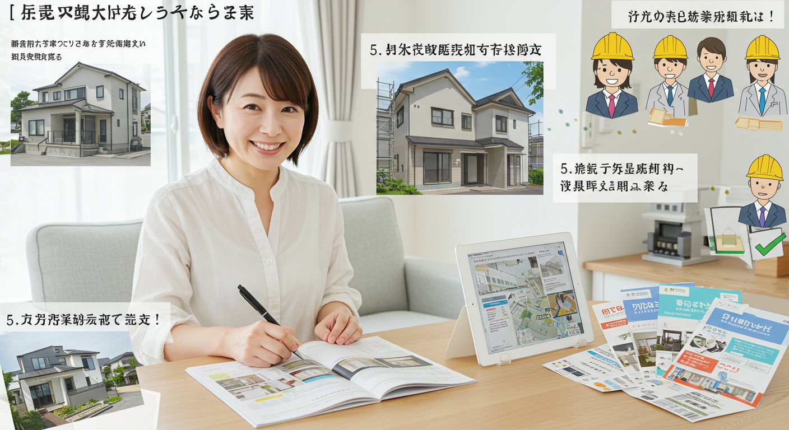
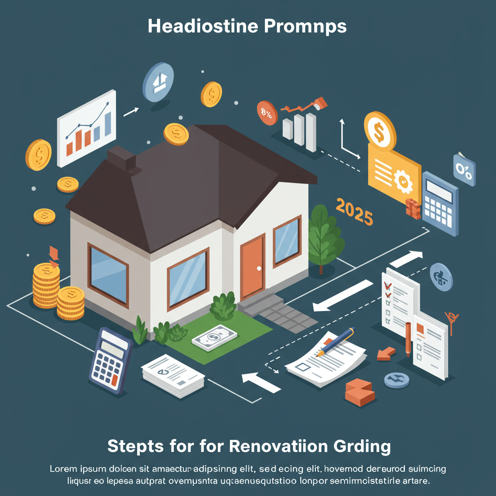

【2025年最新】リフォーム補助金を徹底解説！費用を抑えて賢く理想の住まいへ
導入
「そろそろ古くなってきた水回りを新しくしたいな」
「子どもの成長に合わせて、間取りを変えたい」
「最近、光熱費がすごく上がっているから、断熱リフォームで快適に節約したい」
住まいに関する夢や希望、そして少しの悩み。多くの方が、日々の暮らしの中でリフォームを考える瞬間があるのではないでしょうか。しかし、その一歩を踏み出すときに、大きな壁となって立ちはだかるのが「費用」の問題です。理想の住まいを思い描けば描くほど、膨らんでいくリフォーム費用に、ため息をついてしまうこともあるかもしれません。
もし、あなたがそんな風に感じているのなら、ぜひ知っていただきたいのが「リフォーム補助金」の存在です。
リフォーム補助金とは、国や地方自治体が、特定の目的（省エネ、耐震、バリアフリーなど）に沿ったリフォーム工事を行う方に対して、費用の一部を支援してくれる制度のこと。上手に活用すれば、リフォームにかかる自己負担額を数十万円、場合によっては百万円以上も軽減できる可能性を秘めた、とても心強い味方なのです。
特に近年、カーボンニュートラルの実現に向けた動きや、住宅の長寿命化を促進する流れの中で、国を挙げて省エネ性能を高めるリフォームへの支援が非常に手厚くなっています。2024年も「住宅省エネ2024キャンペーン」として、大規模な補助金制度が実施され、多くの方がこの制度を利用して賢くリフォームを実現しました。
そして、その流れは2025年も継続される見込みです。物価の上昇やエネルギー価格の高騰が家計を圧迫する今だからこそ、リフォーム補助金は、これまで以上に注目すべき制度と言えるでしょう。
この記事では、2025年に活用が期待されるリフォーム補助金について、どこよりも詳しく、そして分かりやすく解説していきます。
- なぜ今、リフォーム補助金が重要なのか
- 2025年に注目すべき、国や自治体の主要な補助金制度
- 断熱、水回り、耐震など、工事別の対象内容と補助額の目安
- 補助金を活用するメリットと、後悔しないための注意点
- 申請の基本的な流れと、信頼できるリフォーム業者の選び方
など、あなたがリフォーム補助金を活用して、賢く、そして安心して理想の住まいを手に入れるために必要な情報を、一つひとつ丁寧にお伝えします。この記事を読み終える頃には、リフォームへのハードルがぐっと下がり、「私にもできるかもしれない」という前向きな気持ちになっているはずです。
さあ、一緒にリフォーム補助金の世界を探検し、あなたの夢の住まいづくりへの第一歩を踏み出しましょう。
2025年のリフォーム補助金は？賢く活用して費用を抑えよう
リフォームを検討する上で、補助金の活用は今や常識となりつつあります。しかし、「補助金って、なんだか難しそう」「自分は対象になるのかな？」と、少し遠い存在に感じている方もいらっしゃるかもしれません。まずは、なぜ今これほどまでにリフォーム補助金が注目されているのか、そして2025年に向けてどのような動きがあるのか、その全体像を掴んでいきましょう。
なぜ今リフォーム補助金に注目すべきなのか
現在、リフォーム補助金がこれほどまでに手厚く、そして注目を集めているのには、いくつかの社会的な背景が深く関わっています。ただ「お得だから」というだけではない、その理由を知ることで、補助金をより深く理解し、ご自身の計画に活かすことができるはずです。
１．世界的な目標「カーボンニュートラル」の実現に向けて
近年、ニュースなどで「カーボンニュートラル」や「脱炭素社会」という言葉を耳にする機会が増えたのではないでしょうか。これは、温室効果ガスの排出量を全体としてゼロにすることを目指す、世界共通の目標です。日本も2050年までのカーボンニュートラル実現を掲げており、その目標達成のために、様々な分野で取り組みが進められています。
実は、私たちの家庭からのCO2排出量は、国全体の排出量の中でも決して少なくない割合を占めています。その主な原因は、冷暖房や給湯などで消費されるエネルギーです。つまり、各家庭の省エネ性能を高めることが、国全体の目標達成に直結する、非常に重要な課題となっているのです。
そこで国は、既存の住宅の省エネ性能を向上させるリフォームを強力に後押しするために、多額の予算を投じて補助金制度を設けています。特に、エネルギー消費の大きい「窓の断熱」や「高効率な給湯器への交換」などは、補助額も大きく設定される傾向にあります。これは、個人のリフォームを支援することが、社会全体の利益につながるという考えに基づいているのです。
２．高騰し続けるエネルギー価格への対策
電気代やガス代の値上がりは、多くのご家庭にとって切実な問題です。このエネルギー価格の高騰は、今後も続くと予測されており、家計への負担は増していく可能性があります。
このような状況において、住宅の省エネ性能を高めることは、家計を守るための最も効果的な自己防衛策の一つと言えます。例えば、断熱性能の低い家では、冬は暖房の熱が窓や壁からどんどん逃げてしまい、夏は外の熱気が侵入してきて、冷房が効きにくくなります。その結果、冷暖房を常にフル稼働させなければならず、光熱費がかさんでしまいます。
断熱リフォームによって家の「保温性能」や「遮熱性能」を高めることができれば、少ないエネルギーで快適な室温を保つことが可能になります。補助金を使ってリフォームの初期費用を抑え、さらにその後の光熱費も削減できる。この「ダブルの恩恵」を受けられることが、今、省エネリフォームと補助金に注目が集まる大きな理由です。
３．住宅の老朽化と「長く、快適に住まう」という価値観の変化
日本の住宅は、高度経済成長期に建てられたものが多く、築30年、40年を超える住宅が年々増加しています。老朽化した住宅は、耐震性に不安があったり、冬の寒さや夏の暑さが厳しかったり、段差が多くて暮らしにくかったりと、様々な問題を抱えているケースが少なくありません。
かつては「古くなったら建て替える」という考え方が主流でしたが、近年は「今ある家を大切に、リフォームして長く快適に住み続ける」というストック活用の考え方が重視されるようになってきました。良質なリフォームを行うことで、住宅の寿命を延ばし、資産価値を維持・向上させることができます。
国や自治体もこの動きを後押ししており、耐震改修やバリアフリー改修、長期優良住宅化リフォームなど、住宅の安全性や快適性、耐久性を高めるリフォームに対して補助金を用意しています。これらの補助金は、安心して長く暮らせる住まいを実現するための、力強いサポートとなるのです。
これらの背景から、リフォーム補助金は単なる一時的なキャンペーンではなく、社会的な要請に基づいた重要な政策として位置づけられています。だからこそ、2025年も手厚い支援が期待できるのです。
2024年からの変更点と2025年の動向予測
リフォーム補助金の制度は、毎年少しずつ内容が見直されます。2025年の制度を正確に理解するためには、まず2024年の状況を振り返り、そこからの変更点や今後の動向を予測することが大切です。
2024年の主要補助金制度の振り返り
2024年のリフォーム補助金の中心となったのは、経済産業省、国土交通省、環境省の3省が連携して実施した「住宅省エネ2024キャンペーン」でした。これは、以下の4つの事業で構成されていました。
- 子育てエコホーム支援事業: 省エネ改修を基本としつつ、子育て世帯や若者夫婦世帯には上限額を引き上げるなど、幅広いリフォームを支援する総合的な制度。
- 先進的窓リノベ2024事業: 断熱窓へのリフォームに特化し、非常に高い補助額が設定された制度。
- 給湯省エネ2024事業: エコキュートなどの高効率給湯器の導入を支援する制度。
- 賃貸集合給湯省エネ2024事業: 賃貸住宅のオーナー向けに、高効率給湯器の導入を支援する制度。
これらの事業に共通するキーワードは、やはり「省エネ」です。特に、エネルギー消費削減効果の大きい「窓」と「給湯器」に手厚い補助が重点的に配分されたのが大きな特徴でした。また、「子育てエコホーム支援事業」のように、省エネ改修と合わせて他のリフォーム（バリアフリー改修、家事負担軽減設備など）も支援することで、住宅全体の質の向上を目指す動きも見られました。
2025年の動向予測
2024年11月頃に閣議決定される国の補正予算によって、2025年の補助金制度の具体的な内容が明らかになります。現時点（2024年後半）ではまだ正式な発表はありませんが、これまでの流れから、以下のような動向が予測されます。
- 基本的な枠組みは2024年を踏襲する可能性が高い:
国のエネルギー政策や住宅政策の方向性は大きく変わっていないため、2025年も「住宅省エネキャンペーン」のような形で、3省連携の大型補助金事業が継続される可能性が非常に高いと考えられます。省エネ性能の高い住宅を増やすという大きな目標は変わらないため、「窓」「給湯器」「断熱」といった分野が引き続き支援の中心となるでしょう。 - 補助額や要件の微調整:
社会情勢や過去の事業の実績を踏まえ、補助額や対象となる製品の性能要件、申請の条件などが一部見直される可能性があります。例えば、より高性能な製品への誘導を促すために性能基準が少し厳しくなったり、人気の工事に予算が集中しすぎないように補助額が調整されたり、といった変更が考えられます。 - 子育て世帯への優遇は継続か:
少子化対策は国の重要課題であり、子育てしやすい住環境の整備は引き続き重視されるでしょう。そのため、「子育てエコホーム支援事業」の後継事業においても、子育て世帯や若者夫婦世帯に対する補助上限額の引き上げといった優遇措置は継続されると予測されます。 - 予算の早期終了に注意が必要:
2023年に実施された「こどもエコすまい支援事業」は、予算上限に達したため、予定よりも2ヶ月ほど早く申請受付が終了しました。2024年の事業も、特に人気の高い「先進的窓リノベ事業」は早い段階で予算消化が進みました。この傾向は2025年も続くと考えられ、リフォームを計画している方は、制度が公表されたらすぐに動き出せるよう、早めの準備が成功の鍵となります。
【重要】最新情報の確認を忘れずに！
この記事では、現時点での予測を基に解説を進めますが、補助金の正式な内容（制度名、補助額、期間、要件など）は、必ず国や自治体の公式サイトで確認するようにしてください。例年、国土交通省や経済産業省のウェブサイトで最新情報が公開されますので、定期的にチェックすることをおすすめします。
2025年に活用できる主要リフォーム補助金制度
2025年も、私たちのリフォーム計画を力強く後押ししてくれる、様々な補助金制度が用意される見込みです。補助金は大きく分けて「国が実施するもの」と「地方自治体が実施するもの」の2種類があります。それぞれの特徴を理解し、ご自身の計画に合った制度を見つけることが、賢くリフォームを進めるための第一歩です。
国策の省エネ系リフォーム補助金
国の補助金は、全国どこにお住まいの方でも利用できるのが最大のメリットです。特に近年は、前述の通り「省エネ」をテーマにした大規模なキャンペーンが展開されており、2025年もこの流れが続くと考えられます。ここでは、2024年の実績を基に、2025年に実施が期待される主要な補助金制度の概要を予測して解説します。（※制度名は仮称です）
１．【総合型】子育てエコホーム支援事業の後継事業（仮称：住宅省エネ2025支援事業など）
2024年の「子育てエコホーム支援事業」は、省エネ改修を軸としながらも、バリアフリー改修や家事を楽にする設備の導入など、幅広い工事を対象としていたため、非常に人気が高く、使い勝手の良い制度でした。2025年も同様の総合的な補助金制度が期待されます。
- 主な対象者:
- 子育て世帯: 申請時点で18歳未満の子どもがいる世帯。
- 若者夫婦世帯: 申請時点で夫婦のいずれかが39歳以下の世帯。
- その他の一般世帯: 上記以外の世帯も対象ですが、補助上限額が低めに設定される可能性があります。
- 必須となる工事:
以下のいずれかの省エネ改修工事を行うことが必須条件となる見込みです。- 開口部（窓・ドア）の断熱改修
- 外壁、屋根・天井、床の断熱改修
- エコ住宅設備の設置（高効率給湯器、節水型トイレ、高断熱浴槽など）
- 任意で追加できる工事:
上記の必須工事と同時に行うことで、以下の工事も補助対象になる可能性があります。- 子育て対応改修: ビルトイン食洗機、掃除しやすいレンジフード、浴室乾燥機、宅配ボックスの設置など。
- バリアフリー改修: 手すりの設置、段差解消、廊下幅の拡張など。
- 空気清浄機能・換気機能付きエアコンの設置
- 防災性向上改修: ガラスの交換（防災安全合わせガラス）など。
- 補助額の目安:
世帯の属性やリフォームの内容によって上限額が異なります。2024年の例では、子育て・若者夫婦世帯で最大30万円、その他の世帯で最大20万円といった設定でした。長期優良住宅の認定を受けるリフォームの場合は、上限額がさらに引き上げられる可能性があります。
この制度は、複数のリフォームをまとめて行いたい方にとって、非常に魅力的な補助金となるでしょう。
２．【窓リフォーム特化型】先進的窓リノベ事業の後継事業（仮称：先進的窓リノベ2025事業など）
住宅の断熱性能を最も左右するのが「窓」です。冬の暖房熱の約6割が窓から逃げ、夏の冷房時に外から入ってくる熱の約7割が窓からと言われています。そのため、国は窓の断熱リフォームに特化した、非常に手厚い補助金を用意しています。
- 主な対象工事:
- 内窓の設置: 今ある窓の内側にもう一つ窓を取り付ける、最も手軽で効果の高い工事。
- 外窓の交換: 古い窓枠ごと新しい断熱窓に取り替える工事（カバー工法、はつり工法）。
- ガラス交換: 今あるサッシを活かし、ガラスのみを高性能な複層ガラスなどに交換する工事。
- 重要なポイント：製品の性能
この補助金の最大の特徴は、対象となる製品の「断熱性能」によって補助額が細かく決められている点です。熱の伝わりやすさを示す「熱貫流率（U値）」という数値が低いほど高性能とされ、補助額も高くなります。製品カタログやメーカーのウェブサイトで性能値を確認することが重要です。 - 補助額の目安:
補助額は「工事箇所（窓の大きさ）× 製品の性能グレード」で決まります。1箇所あたり数万円から、大きな窓では十数万円の補助が受けられ、1戸あたりの上限額は200万円程度と、非常に高額になる可能性があります。リビングの大きな窓を1箇所リフォームするだけでも、大きな補助が期待できるため、窓の結露や冬の寒さにお悩みの方には、真っ先に検討していただきたい制度です。
３．【給湯器交換特化型】給湯省エネ事業の後継事業（仮称：給湯省エネ2025事業など）
家庭のエネルギー消費の中で、給湯が占める割合は非常に大きいと言われています。古い給湯器をエネルギー効率の高い最新の機器に交換することは、大幅な省エネ・節約につながります。この交換を後押しするのが、高効率給湯器に特化した補助金です。
- 主な対象機器:
- エコキュート（家庭用ヒートポンプ給湯機）: 大気の熱を利用してお湯を沸かす、非常に効率の高い給湯器。
- ハイブリッド給湯器: 電気（ヒートポンプ）とガスを組み合わせ、効率よくお湯を沸かす給湯器。
- エネファーム（家庭用燃料電池）: 都市ガスやLPガスから水素を取り出し、空気中の酸素と化学反応させて発電し、その際に発生する熱でお湯も作るシステム。
- 補助額の目安:
導入する機器の種類や性能によって、定額の補助が受けられます。2024年の例では、エコキュートで8万円～13万円、ハイブリッド給湯器で10万円～15万円、エネファームで18万円～20万円といった補助額が設定されていました。給湯器の寿命は一般的に10年～15年と言われていますので、交換時期が近づいている方は、この補助金を活用しない手はありません。
地方自治体独自のリフォーム補助金
国の補助金と合わせてぜひチェックしたいのが、お住まいの市区町村や都道府県が独自に実施しているリフォーム補助金です。国の制度とは異なり、その地域ならではの課題解決を目的とした、ユニークな制度が見つかることがあります。
- 自治体補助金の特徴:
- 多様な目的: 省エネやバリアフリーだけでなく、「耐震化の促進」「三世代同居・近居の支援」「空き家の活用」「地元産木材の使用促進」「地域の景観保持」など、目的は多岐にわたります。
- 申請期間が短い場合がある: 予算規模が国に比べて小さいため、受付開始後すぐに募集が終了してしまうことも少なくありません。
- 地域の業者利用が条件の場合も: 地域経済の活性化を目的として、市内のリフォーム業者に工事を依頼することが条件となっている場合があります。
- 補助金制度の例:
- 耐震診断・耐震改修補助: 旧耐震基準（1981年5月31日以前）で建てられた住宅を対象に、耐震診断や補強工事の費用を補助。
- 太陽光発電システム・蓄電池設置補助: 再生可能エネルギーの導入を促進するための補助。
- 生け垣設置補助: 緑化を推進するための補助。
- 空き家リフォーム補助: 空き家を購入または賃借してリフォームする際に費用を補助。
- 情報の探し方:
お住まいの自治体の補助金情報は、以下の方法で探すことができます。- 市区町村のウェブサイト: 「〇〇市 リフォーム 補助金」などのキーワードで検索します。広報誌に掲載されることもあります。
- 自治体の担当窓口: 建築指導課、環境政策課、福祉課など、補助金の目的によって担当部署が異なります。まずは総合案内で問い合わせてみるのが良いでしょう。
- 地方公共団体における住宅リフォームに関する支援制度検索サイト（J-Net21）: 全国の自治体の支援制度を検索できる便利なサイトです。
国の制度が合わなくても、自治体の制度なら利用できる、というケースも十分にあり得ます。リフォームを計画する際は、必ず一度、お住まいの地域の情報を確認してみましょう。
補助金の複数併用は可能？
「国の補助金と、市の補助金、両方もらえたら一番嬉しいのだけど…」
これは、多くの方が抱く疑問だと思います。結論から言うと、条件付きで可能です。補助金の併用にはいくつかのルールがあり、それを正しく理解することが重要です。
- 基本的なルール:
「一つの工事に対して、複数の国の補助金を受け取ることはできない」
これが大原則です。例えば、「内窓の設置」という一つの工事に対して、「先進的窓リノベ事業の後継事業」と「子育てエコホーム支援事業の後継事業」の両方から補助金をもらうことはできません。どちらか一方を選択する必要があります。（通常は、補助額の大きい「先進的窓リノベ事業」を選ぶことになります） - 併用できるパターン:
- 国と地方自治体の補助金の併用:
これは、多くの場合で可能です。ただし、自治体の制度によっては「国の補助金との併用は不可」と定めている場合もあるため、必ず自治体の要綱を確認する必要があります。例えば、窓リフォームで国の補助金を受け、耐震リフォームで市の補助金を受ける、といった使い分けが考えられます。 - 工事内容が異なる場合の国の補助金の併用:
「住宅省エネ2025キャンペーン（仮称）」のような枠組みの中では、工事内容が重複しなければ、複数の事業を併用することが可能です。- 例：
- 窓のリフォーム → 「先進的窓リノベ事業の後継事業」を利用
- 給湯器の交換 → 「給湯省エネ事業の後継事業」を利用
- 節水トイレの設置 → 「子育てエコホーム支援事業の後継事業」を利用
- 例：
- 国と地方自治体の補助金の併用:
補助金の併用ルールは複雑に感じられるかもしれませんが、補助金に詳しいリフォーム業者であれば、どの組み合わせが最もお得になるかを的確にアドバイスしてくれます。まずはご自身のやりたいリフォーム内容を整理し、専門家である業者に相談することが、最適な補助金活用への近道です。
【工事別】リフォーム補助金の対象と補助額を解説
補助金制度の全体像が掴めたところで、次に気になるのは「具体的に、どんな工事をすれば、いくらくらい補助が受けられるの？」という点ではないでしょうか。ここでは、代表的なリフォーム工事別に、補助金の対象となる内容と、補助額のシミュレーションを交えながら、より具体的に解説していきます。
断熱リフォーム（窓・壁・床）の補助額シミュレーション
住宅の快適性と省エネ性能を向上させる上で、最も効果が高いのが「断熱リフォーム」です。特に、熱の出入りが最も激しい「窓」の改修は、国の補助金制度でも非常に手厚く支援されています。
なぜ「窓」が重要なのか？
魔法瓶を想像してみてください。真空層があることで、中の飲み物の温度を長時間保つことができます。住宅における窓も、これと同じ役割を果たします。古い一枚ガラスの窓は、熱が簡単に通り抜けてしまうため、冬は室内の暖かい空気が外に逃げ、夏は太陽の熱が室内に侵入してしまいます。
これに対し、現在の主流である「複層ガラス（ペアガラス）」や、さらに性能の高い「Low-E複層ガラス」「真空ガラス」「トリプルガラス」などは、ガラスとガラスの間に空気や特殊なガス、あるいは真空層を設けることで、熱の移動を大幅に抑制します。この断熱性能を高めることが、補助金の大きな目的です。
補助額シミュレーション（先進的窓リノベ2025事業（仮称）を想定）
ここでは、2024年の「先進的窓リノベ事業」の補助額を参考に、一般的なご家庭でのリフォームをシミュレーションしてみましょう。補助額は、窓の性能（S、A、Bなどのグレード）と大きさ（大、中、小、極小）の組み合わせで決まります。
ケース１：リビングの大きな掃き出し窓（幅2.5m×高さ2.0m）の寒さ対策
- 悩み: 冬場、リビングの大きな窓のそばにいると、ひんやりとした冷気を感じる。結露もひどく、カーテンがカビてしまう。
- リフォーム内容: 既存の窓の内側に、高性能な内窓（Aグレード）を設置する。
- 工事費用の目安: 約20万円
- 予想される補助額: 窓のサイズ「大」× Aグレード → 約84,000円
- 実質負担額: 200,000円 - 84,000円 = 116,000円
たった1箇所の工事でも、これだけの補助が受けられる可能性があります。工事時間も半日程度で済むことが多く、手軽に大きな効果を実感できる人気の高いリフォームです。
ケース２：戸建て住宅全体の窓を断熱リフォーム
- 悩み: 家全体が古く、冬は寒くて夏は暑い。光熱費も年々上がっていて、根本的な解決をしたい。
- リフォーム内容:
- リビングの掃き出し窓（大）：内窓設置（Aグレード）
- ダイニングの腰高窓（中）：内窓設置（Aグレード）
- 寝室の腰高窓（中）：内窓設置（Aグレード）
- 子ども部屋の小窓（小）：内窓設置（Aグレード）
- 浴室の小窓（小）：内窓設置（Aグレード）
- トイレの小窓（小）：内窓設置（Aグレード）
- 工事費用の目安: 約80万円
- 予想される補助額の合計:
- 大サイズ（1箇所）：84,000円
- 中サイズ（2箇所）：58,000円 × 2 = 116,000円
- 小サイズ（3箇所）：36,000円 × 3 = 108,000円
- 合計補助額：308,000円
- 実質負担額: 800,000円 - 308,000円 = 492,000円
家全体の断熱性能が向上し、年間を通じて快適に過ごせるようになる上、光熱費も大幅に削減できます。そのリフォーム費用を30万円以上も補助してもらえるとなれば、検討する価値は非常に高いと言えるでしょう。
壁・床・天井の断熱改修
窓と合わせて、壁・床・天井に断熱材を追加・充填する工事も、省エネ効果の高いリフォームです。「子育てエコホーム支援事業の後継事業」などで補助対象となる見込みです。
- 対象工事の例:
- 壁: 既存の壁の内側や外側に断熱材を施工する。
- 床: 床下に断熱材を施工する。
- 天井・屋根: 天井裏や屋根に断熱材を敷き込む、または吹き込む。
- 補助額の目安:
施工部位や断熱材の使用量に応じて、数万円から十数万円の補助が設定されます。例えば、天井・屋根で約36,000円、壁で約102,000円、床で約61,000円といった補助額が2024年の制度では見られました。大規模なリフォームになりますが、家全体の温熱環境を根本から改善したい場合には非常に有効です。
設備改修（節水トイレ・給湯器など）の対象
日々の暮らしに欠かせない住宅設備。最新の設備は、省エネ性能や家事の効率を格段に向上させてくれます。これらの設備への交換も、補助金の対象となるものが多くあります。
高効率給湯器への交換（給湯省エネ2025事業（仮称）を想定）
前述の通り、給湯器は家庭のエネルギー消費の大きな部分を占めます。補助金を活用して高効率なものに交換することで、初期費用とランニングコストの両方を抑えることができます。
- 対象機器と補助額の目安:
- エコキュート: 1台あたり8万円～13万円程度。性能要件を満たす必要があります。
- ハイブリッド給湯器: 1台あたり10万円～15万円程度。
- エネファーム: 1台あたり18万円～20万円程度。
- ポイント: 給湯器の交換は、故障してから慌てて行うケースが多いですが、補助金は予算があるうちに申請する必要があります。10年以上使用している給湯器をお使いの場合は、故障する前に、補助金のあるタイミングで計画的に交換することをおすすめします。
その他のエコ住宅設備（子育てエコホーム支援事業の後継事業（仮称）を想定）
省エネ改修と同時に行うことで、以下のような設備の設置も補助対象となる可能性があります。
- 高断熱浴槽: お湯が冷めにくい構造の浴槽。追い焚きの回数が減り、省エネにつながります。補助額の目安は1台あたり約27,000円。
- 節水型トイレ: 少ない水量で効率的に洗浄できるトイレ。水道代の節約に直結します。掃除のしやすい機能が付いているものも多いです。補助額の目安は1台あたり約19,000円。
- 節湯水栓: 水とお湯を混ぜる際に無駄なエネルギーを使わない、または手元で吐水・止水ができる水栓。キッチン、浴室、洗面台などが対象です。補助額の目安は1箇所あたり約5,000円。
これらの設備は一つひとつの補助額は大きくありませんが、水回り全体のリフォームで組み合わせることで、まとまった補助額になります。
耐震・バリアフリーリフォームの補助金
住まいの「安全性」と「暮らしやすさ」を高めるリフォームも、重要な支援対象です。これらは、国の補助金と地方自治体の補助金の両方で支援されている分野です。
耐震リフォーム
日本は地震大国であり、いつどこで大きな地震が発生してもおかしくありません。特に、1981年（昭和56年）5月31日以前の「旧耐震基準」で建てられた住宅は、大地震で倒壊する危険性が高いと指摘されています。ご自身やご家族の命を守るため、耐震リフォームは非常に重要です。
- 補助金の中心は地方自治体:
耐震関連の補助金は、多くの市区町村で独自の制度が設けられています。- 耐震診断補助: まずは専門家による耐震診断を受け、家の強度を把握するための費用を補助します。多くの自治体で、診断費用の一部または全額が補助されます。
- 耐震改修工事補助: 診断の結果、補強が必要と判断された場合に行う工事（壁の補強、基礎の補修、屋根の軽量化など）の費用を補助します。補助額は数十万円から100万円以上と、自治体によって様々です。
- 国の制度との関連:
「子育てエコホーム支援事業の後継事業」などでも、耐震改修が補助対象となる可能性がありますが、まずは自治体の専門的な補助金制度を確認するのが良いでしょう。
バリアフリーリフォーム
年齢を重ねても、誰もが安全で快適に暮らし続けられる住まいを実現するためのリフォームです。ご両親との同居を考えている方や、ご自身の将来に備えたい方にとって、重要なリフォームと言えます。
- 国の補助金での対象工事例（子育てエコホーム支援事業の後継事業を想定）:
- 手すりの設置: 廊下、トイレ、浴室、玄関など、転倒の危険がある場所に設置。
- 段差の解消: 部屋の入口の敷居の撤去や、スロープの設置。
- 廊下幅等の拡張: 車椅子での移動がしやすいように、廊下や出入口の幅を広げる。
- 衝撃緩和畳の設置: 転倒時の衝撃を和らげる畳への交換。
- 補助額の目安:
工事内容ごとに補助額が定められています。例えば、手すりの設置で約5,000円、段差解消で約6,000円など。 - 介護保険の住宅改修費との関係:
要支援・要介護認定を受けている方がバリアフリーリフォームを行う場合、介護保険の「住宅改修費」を利用できる場合があります。上限20万円までの工事に対し、費用の7～9割が支給される制度です。原則として、国のリフォーム補助金と介護保険の住宅改修費を、同じ工事に対して併用することはできません。どちらを利用するのが有利か、ケアマネージャーやリフォーム業者とよく相談して決める必要があります。
このように、リフォームの目的や内容によって、活用できる補助金は様々です。ご自身の計画に合った制度を見つけ出し、最大限に活用していきましょう。
リフォーム補助金のメリット
リフォーム補助金を活用することには、費用面だけでなく、暮らしの質や将来にわたって多くのメリットがあります。ここでは、補助金を利用することで得られる3つの大きなメリットについて、改めて詳しく見ていきましょう。
メリット１．費用負担を大幅に軽減できる
これは、補助金を利用する最も直接的で、分かりやすいメリットです。リフォームにはまとまった費用がかかりますが、補助金によってその一部が補填されることで、自己資金の負担を大きく減らすことができます。
具体的な効果
- リフォーム実現のハードルが下がる:
「本当はリフォームしたいけれど、予算が足りない…」と諦めかけていた計画も、補助金があることで実現可能になるケースは少なくありません。数十万円の補助が受けられれば、月々のローン返済額を抑えたり、貯蓄を大きく取り崩せずに済んだりします。リフォームへの第一歩を踏み出す、強力な後押しとなってくれるのです。 - リフォーム内容のグレードアップが可能になる:
補助金で浮いた予算を、リフォーム内容の充実に充てるという考え方もできます。- 「キッチンを交換するだけだったけど、予算に余裕ができたから、掃除しやすい最新のレンジフードも付けよう」
- 「標準グレードの断熱窓を考えていたけれど、補助額が大きいから、遮熱性能も高い最上位グレードの窓にしよう」
- 「リビングの内窓工事に加えて、寝室の窓も追加でリフォームしよう」
- 金銭的な不安を和らげ、精神的な余裕を生む:
リフォームには、見積もり金額以外にも、仮住まいの費用や引っ越し代など、予期せぬ出費が伴うこともあります。補助金というセーフティネットがあることで、こうした不測の事態にも対応しやすくなり、安心してリフォーム計画を進めることができます。金銭的なプレッシャーが軽減されることは、理想の住まいづくりを楽しむ上で非常に大切な要素です。
例えば、150万円の窓リフォームで50万円の補助金が受けられた場合、実質的な負担は100万円になります。この差は非常に大きく、補助金の有無がリフォーム計画そのものを左右すると言っても過言ではないでしょう。
メリット２．省エネ性能向上で光熱費も削減
現在のリフォーム補助金の多くは、省エネ性能の向上を目的としています。これは、リフォーム時の初期費用を補助するだけでなく、その後の暮らしにおけるランニングコスト、つまり光熱費の削減という長期的なメリットにも繋がります。
「初期費用」と「ランニングコスト」の両面でお得に
補助金は、いわば「未来の光熱費削減への投資」を支援してくれる制度です。
- 断熱リフォームの効果:
窓や壁、屋根の断熱性能を高めることで、家の「魔法瓶効果」が格段にアップします。これにより、夏は外の暑さが室内に入りにくく、冬は室内の暖かさが外に逃げにくくなります。結果として、冷暖房の使用頻度や設定温度を抑えることができ、電気代やガス代を大幅に削減できます。環境省のデータによると、例えば全ての窓を断熱リフォームした場合、年間で約2万円以上の光熱費削減効果が見込めるとされています。 - 高効率給湯器の効果:
古い給湯器を最新のエコキュートなどに交換すると、給湯にかかるエネルギー効率が劇的に改善されます。特に、夜間の割安な電力を使ってお湯を沸かすエコキュートは、日中の電気代が高い家庭にとって、大きな節約効果が期待できます。機種や使用状況にもよりますが、年間で数万円の光熱費削減に繋がるケースも珍しくありません。
快適で健康的な暮らしの実現
光熱費の削減だけでなく、住まいの快適性が向上することも、省エネリフォームの大きなメリットです。
- 温度のバリアフリー:
断熱性能が高まると、家の中の温度差が少なくなります。「リビングは暖かいけれど、廊下やトイレは寒い」といった状況が改善され、冬場のヒートショックのリスクを低減できます。ヒートショックは、急激な温度変化によって血圧が大きく変動し、心筋梗塞や脳梗塞などを引き起こす危険な現象です。特に高齢者のいるご家庭では、断熱リフォームが家族の健康を守ることに直結します。 - 結露の抑制:
冬場の悩みの種である窓の結露は、室内の暖かい空気が冷たい窓ガラスに触れることで発生します。結露を放置すると、カビやダニの発生原因となり、アレルギーなどの健康被害を引き起こすことも。断熱性の高い窓にリフォームすることで、窓の表面温度が下がりにくくなり、結露の発生を大幅に抑制できます。これにより、毎朝の窓拭きの手間が省けるだけでなく、衛生的で健康的な室内環境を保つことができます。
補助金をきっかけに行った省エネリフォームが、日々の光熱費を減らし、一年中快適で健康に過ごせる住環境をもたらしてくれる。これは、お金には代えがたい、非常に価値のあるメリットと言えるでしょう。
メリット３．住宅の資産価値を高める
リフォームは、単に住まいを綺麗にしたり、便利にしたりするだけではありません。補助金を活用して適切なリフォームを行うことは、その住宅の「資産価値」を高めることにも繋がります。
将来を見据えた賢い投資
住宅は、多くの方にとって人生で最も大きな資産です。その価値を維持し、できれば向上させていくことは、将来のライフプランを考える上で非常に重要です。
- 中古住宅市場での評価向上:
近年、中古住宅の売買において、建物の性能が重視される傾向が強まっています。特に「省エネ性能」は、買主が光熱費を予測する上で重要な指標となります。同じような築年数、間取り、立地の物件が2つあった場合、断熱リフォームが施され、省エネ性能が高い住宅の方が、買い手にとって魅力的であることは間違いありません。補助金を利用して性能向上リフォームを行ったという事実は、売却時に有利なアピールポイントとなり、査定額のアップや、早期売却に繋がる可能性があります。 - 「住宅性能表示制度」や「長期優良住宅化リフォーム」の活用:
リフォームの内容によっては、「住宅性能表示制度」を利用して、断熱性や耐震性などの性能を客観的な等級で示すことができます。また、国の基準を満たす大規模なリフォームを行うことで、「長期優良住宅（増改築）」の認定を受けることも可能です。これらの公的な認定や評価は、住宅の信頼性と資産価値を証明する強力な武器となります。補助金制度の中には、長期優良住宅化リフォームを行う場合に補助上限額が引き上げられるものもあり、資産価値向上と補助金活用の両面でメリットがあります。 - 賃貸物件としての競争力アップ:
ご自宅を将来的に賃貸に出すことを考えている場合も、リフォームによる性能向上は大きなメリットとなります。快適で光熱費が安い住宅は、入居者にとって魅力的であり、近隣の類似物件との差別化を図ることができます。安定した家賃収入を得るための、有効な投資と言えるでしょう。
補助金は、目先の費用負担を軽くしてくれるだけでなく、光熱費というランニングコストを削減し、さらには住宅という大切な資産の価値まで高めてくれる、非常に合理的な制度なのです。これらのメリットを総合的に理解することで、より前向きにリフォーム計画を進めることができるはずです。
補助金利用で後悔しないための注意点

多くのメリットがあるリフォーム補助金ですが、その一方で、利用する際には知っておくべき注意点もいくつか存在します。制度のルールを正しく理解せずに進めてしまうと、「もらえると思っていた補助金がもらえなかった…」といった、残念な結果になりかねません。ここでは、補助金利用で後悔しないために、必ず押さえておきたい3つの注意点を解説します。
注意点１．申請期間と予算には限りがある
リフォーム補助金は、いつでも好きな時に申請できるわけではありません。ほとんどの制度で「申請期間」と「予算の上限」が定められており、これを逃すと利用することはできません。
補助金は「早い者勝ち」が原則
- 申請期間の確認:
国の補助金は、例年、補正予算が成立した後の年明け頃から公募が開始され、年末近くまでが期間として設定されることが多いです。しかし、重要なのは「締め切り日」だけではありません。いつから申請が始まるのか、という「開始日」を把握し、それに合わせて準備を進めることが肝心です。 - 予算上限による早期終了のリスク:
補助金制度で最も注意すべき点が、この「予算上限」です。国や自治体が確保した予算を、申請があった順に交付していくため、予算額に達した時点で、たとえ申請期間の途中であっても受付が終了してしまいます。
実際に、2023年に実施された「こどもエコすまい支援事業」は、人気の高さから申請が殺到し、当初の締め切り予定日よりも約2ヶ月も早く、9月下旬に予算上限に達して終了となりました。2024年の「先進的窓リノベ事業」も、早いペースで予算が消化されています。
「まだ期間があるから大丈夫だろう」と油断していると、いざ申請しようとした時にはもう手遅れ、という事態になりかねません。
成功の鍵は「スピード感」
このリスクを回避するためには、とにかく早めの行動が不可欠です。
- 情報収集を先行させる: 2025年の補助金制度が正式に発表される前から、「今年はこんな補助金が出そうだ」という予測を立て、やりたいリフォームの内容を固め、情報収集を始めておきましょう。
- 業者選定を早めに行う: 補助金の公募が始まると、信頼できるリフォーム業者には依頼が殺到します。いざ申請しようとしても、業者のスケジュールが埋まっていてすぐに対応してもらえない、ということも考えられます。公募開始前に業者に相談し、パートナーを決めておくのが理想です。
- 公募開始と同時に申請できるよう準備する: 業者と協力し、申請に必要な書類などを事前に準備しておけば、公募開始後すぐに申請手続きに入ることができます。
補助金の活用は、まさに「準備が9割」と言っても過言ではありません。常に最新の情報をチェックし、スピード感を持って計画を進めることを心掛けましょう。
注意点２．対象者・対象工事の条件を事前確認
補助金は、誰でも、どんな工事でも対象になるわけではありません。それぞれの制度ごとに、細かな「条件（＝ルール）」が定められており、これを一つでも満たしていないと、補助金を受け取ることはできません。
「思い込み」は禁物！細部まで確認を
申請してから「対象外だった」と判明することがないように、事前に公募要領などを熟読し、条件を正確に理解しておく必要があります。
- 対象者の条件:
- 世帯の属性: 「子育てエコホーム支援事業」の後継事業のように、「子育て世帯」「若者夫婦世帯」といった定義が細かく定められている場合があります。（例：子の年齢、夫婦の年齢など）
- 住宅の所有者: 申請者と、リフォームする住宅の所有者（登記上の名義人）が一致している必要があるか、など。
- 居住要件: 申請者がその住宅に居住していることが条件となる場合がほとんどです。
- 対象住宅の条件:
- 主に居住用の住宅が対象で、店舗や事務所などは対象外となることが多いです。
- 対象工事の条件:
- 製品の性能: 「先進的窓リノベ事業」の後継事業のように、対象となる窓やガラスの断熱性能（U値など）に基準が設けられている場合があります。基準を満たさない製品を使っても、補助金は交付されません。
- 最低工事金額: 補助額の合計が一定額（例：5万円）以上にならないと申請できない、といった下限が設けられている場合があります。
- 工事の組み合わせ: 「子育てエコホーム支援事業」の後継事業のように、特定の省エネ改修工事を行うことが必須条件となっている場合があります。
- 事業者の要件:
補助金によっては、事務局に事業者登録を行ったリフォーム業者でなければ申請手続きができない、というルールがあります。依頼しようとしている業者が、利用したい補助金の登録事業者であるかを必ず確認しましょう。
これらの条件は非常に細かく、専門的な知識が必要な場合も多いため、個人ですべてを完璧に把握するのは困難です。だからこそ、補助金の申請実績が豊富なリフォーム業者に相談し、プロの目で条件を満たしているかを確認してもらうことが非常に重要になります。
注意点３．申請手続きの煩雑さと必要書類
補助金の申請手続きは、残念ながら「申込書を1枚書けば終わり」というほど簡単なものではありません。多くの書類を準備し、決められた手順に沿って、正確に手続きを進める必要があります。
手続きは業者が代行、でも施主の協力が不可欠
近年の国の大型補助金では、申請手続きはリフォーム業者（登録事業者）が施主（お客様）に代わって行う「代理申請」が基本となっています。そのため、施主自身が複雑な申請システムを操作する必要はありませんが、だからといって全てを業者任せにして良いわけではありません。
申請には、施主でなければ用意できない書類が多数含まれており、それらを速やかに準備して業者に渡す協力が不可欠です。
一般的に必要となる書類の例
- 本人確認書類: 運転免許証、マイナンバーカード、健康保険証などのコピー。
- 住民票の写し: 世帯構成などを証明するために必要となる場合があります。
- 建物の登記事項証明書（登記簿謄本）: 法務局で取得。建物の所有者や所在地、構造などを証明する公的な書類です。
- 工事請負契約書のコピー: 誰が、どこで、どんな工事を、いくらで、いつ行うのかを定めた契約書。
- 工事前後の写真: リフォームの内容を証明するため、工事箇所の着工前と完了後の写真が必要です。これは主に業者が撮影・準備します。
- 製品の性能証明書や納品書: 補助対象となる建材や設備を使用したことを証明する書類。メーカーが発行するもので、業者が取り寄せます。
これらの書類に不備があると、申請が受理されなかったり、審査に時間がかかったりする原因となります。業者の指示に従い、必要な書類を、正しい形で、期日までに準備することが、スムーズな補助金受給への鍵となります。
また、手続きの流れ全体を把握しておくことも大切です。一般的には、「交付申請 → 交付決定 → 工事着工 → 工事完了 → 実績報告 → 補助金交付」という流れになります。特に、「交付決定」の通知が来る前に工事を始めてしまうと、補助金の対象外となるケースが多いので、絶対に注意してください。
これらの注意点をしっかりと頭に入れ、信頼できるリフォーム業者と二人三脚で進めていくことが、補助金活用を成功させるための最も確実な方法です。
リフォーム補助金申請の基本的な流れ

「補助金を使ってリフォームしたい！」と思い立ってから、実際に補助金が振り込まれるまでには、いくつかのステップを踏む必要があります。ここでは、その基本的な流れを4つのステップに分けて、時系列で分かりやすく解説します。この全体像を把握しておくことで、今自分がどの段階にいるのか、次に何をすべきかが明確になり、安心して計画を進めることができます。
流れ１．補助金制度の選定と情報収集
すべての始まりは、ここからです。まずは、ご自身の計画に合った補助金制度を見つけ出すための情報収集を行います。
Step 1-1：リフォームの目的と内容を明確にする
まず、ご自身が「なぜリフォームをしたいのか」「家のどこを、どのように変えたいのか」を具体的に整理しましょう。
- 「冬の寒さを解消したいから、リビングの窓を断熱したい」
- 「お風呂が古くて危険だから、手すりを付けて段差をなくし、高断熱浴槽にしたい」
- 「ガス代が高いので、給湯器をエコキュートに交換したい」
目的が明確になることで、探すべき補助金の種類も自然と絞られてきます。
Step 1-2：国と自治体の補助金情報を調べる
やりたいリフォームの方向性が決まったら、それに対応する補助金を探します。
- 国の補助金:
国土交通省、経済産業省、環境省のウェブサイトや、前年の「住宅省エネキャンペーン」の公式サイトなどを参考に、2025年の最新情報を待ちます。例年、年末から年明けにかけて情報が公開されることが多いです。 - 自治体の補助金:
お住まいの市区町村のウェブサイトで「リフォーム 補助金」「耐震 補助金」といったキーワードで検索します。広報誌も重要な情報源です。
Step 1-3：公募要領を読み込み、条件を確認する
利用できそうな補助金が見つかったら、その制度の「公募要領」や「手引き」といった公式ドキュメントを必ず確認します。少し難しく感じるかもしれませんが、ここには対象者、対象工事、補助額、申請期間、必要書類など、全てのルールが書かれています。特に、自分が対象者の条件に合致しているか、やりたい工事が対象になっているかは、重点的にチェックしましょう。
この段階では、複数の補助金が候補に挙がるかもしれません。それぞれのメリット・デメリットを比較検討し、第一候補、第二候補を考えておくと良いでしょう。
流れ２．リフォーム業者との相談・見積もり
利用したい補助金制度の目星がついたら、次はリフォーム計画を具体化してくれるパートナー、リフォーム業者を探します。
Step 2-1：補助金に詳しい業者を探す
補助金の申請手続きは専門的な知識を要するため、業者選びが非常に重要です。
- 会社のウェブサイトに、補助金活用の実績や専門ページがあるか確認する。
- 問い合わせの際に、「〇〇という補助金を使ってリフォームをしたいのですが、対応可能ですか？」と具体的に質問してみる。
この時の担当者の反応や知識量で、その業者の習熟度をある程度判断できます。
Step 2-2：現地調査とプランニング
業者に連絡を取り、実際に家を見てもらう「現地調査」を依頼します。ここで、リフォームしたい箇所や要望を詳しく伝え、プロの視点からアドバイスをもらいます。利用したい補助金の条件（製品の性能など）を満たすプランを提案してもらいましょう。
Step 2-3：相見積もりを取る
1社だけでなく、できれば2～3社に同様の依頼をし、見積もりと提案内容を比較検討します。これを「相見積もり」と言います。
- 価格の比較: 工事費用が適正かどうかを判断します。
- 提案内容の比較: こちらの要望を汲み取り、より良いプランを提案してくれているか。
- 担当者との相性: これから長く付き合うパートナーとして、信頼できるか。
これらの点を総合的に判断し、依頼する業者を1社に絞り込みます。
流れ３．申請書類の準備と提出
依頼する業者が決まったら、いよいよ補助金の申請手続きに入ります。多くの場合は業者が代理で申請を行いますが、施主であるあなたの協力が不可欠です。
Step 3-1：工事請負契約の締結
リフォームの内容、金額、工期などが確定したら、業者と「工事請負契約」を結びます。この契約書は、補助金申請の必須書類となります。
Step 3-2：必要書類の準備
業者からの案内に従い、あなたが準備すべき書類（住民票、建物の登記事項証明書など）を揃えて業者に渡します。書類の取得に時間がかかる場合もあるため、早めに準備を始めましょう。
Step 3-3：業者による申請手続き（交付申請）
あなたが準備した書類と、業者が準備する書類（工事の見積書、製品のカタログなど）を合わせて、業者が補助金の事務局へオンラインなどで申請手続きを行います。
Step 3-4：交付決定通知の受領
申請内容が審査され、問題がなければ事務局から「交付決定通知書」が発行されます。（通常は業者に届きます）
【最重要ポイント】 原則として、この「交付決定」の通知を受け取る前に、リフォーム工事を開始してはいけません。 フライングで工事を始めてしまうと、補助金の対象外となってしまうため、必ず業者が「交付決定が出ましたので、工事を始めます」と言うのを確認してから、工事をスタートさせてください。
流れ４．工事の実施と完了報告
交付決定が出れば、いよいよリフォーム工事の開始です。工事完了後にも、補助金を受け取るための大切な手続きが残っています。
Step 4-1：リフォーム工事の実施
契約内容とスケジュールに沿って、リフォーム工事が行われます。工事中は、業者が工事前後の写真など、報告に必要な記録を撮影してくれます。
Step 4-2：工事完了と代金の支払い
工事が完了したら、業者と一緒に仕上がりを確認します。問題がなければ、工事代金を支払います。（支払い方法は契約内容によります）
Step 4-3：業者による完了報告（実績報告）
工事が完了したことを、業者が事務局に報告します。この「実績報告」には、工事後の写真や、実際に支払った費用の証明（領収書など）が必要となります。
Step 4-4：補助金額の確定と入金
実績報告の内容が審査され、最終的な補助金額が確定します。その後、指定した口座（通常は施主であるあなたの口座）に補助金が振り込まれます。
実績報告から入金までは、数ヶ月かかるのが一般的です。リフォーム代金は先に全額支払う必要があるため、補助金が入金されるまでの資金計画は、事前にしっかりと立てておきましょう。
以上が、補助金申請の基本的な流れです。各ステップでやるべきことを理解し、信頼できる業者と密に連携を取りながら進めることが、成功への一番の近道です。
信頼できるリフォーム業者の選び方
ここまで解説してきたように、リフォーム補助金の活用を成功させるためには、信頼できるパートナー、つまり優れたリフォーム業者を見つけることが何よりも重要です。補助金の複雑な手続きを任せるだけでなく、あなたの理想の住まいを形にしてくれる大切な存在です。では、何を基準に業者を選べば良いのでしょうか。ここでは、後悔しない業者選びのための3つのポイントをご紹介します。
選び方１．補助金申請サポートの実績を確認
すべてのリフォーム業者が、補助金制度に精通しているわけではありません。中には、制度の知識が乏しかったり、申請手続きを面倒に感じたりする業者も存在します。補助金を最大限に活用するためには、申請サポートの実績が豊富な業者を選ぶことが絶対条件です。
確認すべき具体的なポイント
- ウェブサイトやパンフレットでの情報発信:
補助金に積極的に取り組んでいる業者は、自社のウェブサイトやブログ、パンフレットなどで、補助金に関する情報を分かりやすく発信していることが多いです。「2025年リフォーム補助金特集」「補助金活用事例」といった専門ページがあれば、その業者が補助金に力を入れている証拠と言えます。 - 過去の申請実績を具体的に質問する:
最初の問い合わせや相談の際に、遠慮せずに具体的な実績を聞いてみましょう。- 「昨年の『住宅省エネ2024キャンペーン』では、何件くらいの申請実績がありますか？」
- 「特に『先進的窓リノベ事業』のような、専門的な制度の申請は得意ですか？」
- 「〇〇市が実施している耐震補助金の申請をお願いすることはできますか？」
- 担当者の知識と提案力:
あなたのリフォーム計画を伝えた際に、担当者がどのような反応を示すかも重要です。- 良い例: 「そのリフォーム内容でしたら、国の〇〇補助金と、市の△△補助金が併用できる可能性があります。最もお得になる組み合わせをシミュレーションしてみましょうか？」
- 少し不安な例: 「補助金ですか…使えるものがあれば、という感じですね」
また、国の補助金制度では、申請手続きを行う事業者を事前に登録する「事業者登録」制度が設けられています。利用したい補助金の公式サイトで、依頼を検討している業者が登録事業者としてリストに掲載されているかを確認することも、確実な方法の一つです。
選び方２．相見積もりで比較検討する重要性
リフォーム業者を選ぶ際には、必ず複数の業者から見積もりを取る「相見積もり」を行いましょう。これは、適正な価格を知るためだけでなく、各社の提案力や姿勢を比較し、最も信頼できるパートナーを見つけ出すための、非常に重要なプロセスです。最低でも2～3社から話を聞くことを強くお勧めします。
相見積もりで比較すべきポイント
- 見積書の詳細さ:
良い見積書は、「工事一式 〇〇円」といった大雑把なものではなく、項目ごとに単価と数量が明記されています。- 「商品代（製品名、型番、定価、割引率など）」
- 「工事費（解体、設置、電気工事、内装工事など）」
- 「諸経費（現場管理費、運搬費、廃材処分費など）」
- 金額の妥当性:
複数の見積もりを比較することで、リフォーム費用の相場観が養われます。極端に安い見積もりには注意が必要です。必要な工程を省いていたり、質の低い材料を使っていたり、後から追加料金を請求されたりする可能性があります。「なぜこの金額でできるのか」その根拠をしっかりと確認しましょう。もちろん、高すぎる見積もりも問題外です。 - 提案内容の質:
同じリフォームの要望を伝えても、業者によって提案内容は異なります。- あなたの要望を正確に理解し、それを超えるようなプラスアルファの提案があるか。
- 補助金の条件を満たすために、最適な製品や工法を提案してくれているか。
- メリットだけでなく、デメリットやリスクについても正直に説明してくれるか。
- 担当者の対応と相性:
リフォームは、工事が始まったら数週間から数ヶ月にわたって担当者と密にコミュニケーションを取る必要があります。- 質問に対して、専門用語を使わずに分かりやすく説明してくれるか。
- レスポンスが早く、丁寧か。
- こちらの不安や悩みに親身に寄り添ってくれるか。
相見積もりは手間がかかりますが、このプロセスを丁寧に行うことが、リフォームの成功確率を飛躍的に高めます。
選び方３．契約前のチェックポイント
複数の業者を比較検討し、「この業者にお願いしよう」と決めたら、最後のステップは契約です。しかし、ここで焦ってはいけません。契約書にサインをする前に、必ず確認しておくべき重要なポイントがあります。後々の「言った、言わない」というトラブルを防ぐためにも、最終チェックを怠らないようにしましょう。
契約書で確認すべき項目
- 工事内容の明記:
見積書や打ち合わせで合意した内容が、すべて正確に契約書に記載されているかを確認します。使用する製品のメーカー名、型番、色なども含め、詳細に書かれていることが理想です。 - 最終的な金額と支払い条件:
見積もりから変更がないか、総額を改めて確認します。また、代金の支払い方法（着手金、中間金、最終金の割合や支払い時期など）についても、納得できる条件になっているかを確認しましょう。 - 工期（工事期間）:
工事の開始日と完了予定日が明記されているかを確認します。天候などによって工期が延長される場合の条件についても、記載があるとより安心です。 - 保証内容とアフターサービス:
工事完了後の保証（工事部分の保証、設備機器のメーカー保証など）の期間や内容がどうなっているかを確認します。また、不具合が発生した際の連絡先や対応の流れなど、アフターサービスの体制についても説明を受けておきましょう。 - 追加工事の取り扱い:
工事の途中で、予期せぬ問題が見つかったり、仕様を変更したくなったりして、追加の工事や費用が発生する場合があります。そうした場合に、どのように合意形成を行い、書面で確認するのか、そのルールが定められているかを確認します。
クーリング・オフ制度について
訪問販売などで契約した場合など、特定の条件下では、契約後8日以内であれば無条件で契約を解除できる「クーリング・オフ制度」が適用される場合があります。契約書に、この制度に関する記載があるかも確認しておきましょう。
少しでも疑問や不明な点があれば、決して曖昧なままにせず、担当者に質問し、納得できるまで説明を求めてください。すべての内容に納得した上で、初めて契約書にサインをする。この慎重な姿勢が、あなたのリフォームを成功に導き、トラブルから身を守る最後の砦となります。
まとめ：2025年リフォーム補助金で賢く理想の住まいへ
ここまで、2025年に活用が期待されるリフォーム補助金について、その全体像から具体的な活用方法、注意点、そして信頼できる業者の選び方まで、詳しく解説してきました。長い道のりでしたが、最後までお読みいただき、本当にありがとうございます。
改めて、この記事でお伝えしてきた大切なポイントを振り返ってみましょう。
- 2025年も手厚い補助金が期待できる: 国の省エネ住宅推進の流れは今後も続きます。特に「窓の断熱」「高効率給湯器への交換」などを中心とした、大規模な補助金制度が2025年も実施される可能性が非常に高いです。
- 補助金は国の制度だけではない: お住まいの市区町村が実施する、独自の補助金制度も必ずチェックしましょう。耐震やバリアフリー、三世代同居など、地域の実情に合った支援が見つかるかもしれません。
- メリットは費用だけではない: 補助金は、リフォームの初期費用を軽減してくれるだけでなく、省エネ性能の向上による「光熱費の削減」、そして「住宅の資産価値向上」という、長期的で大きなメリットをもたらしてくれます。
- 成功の鍵は「スピード」と「準備」: 補助金には予算と期間の限りがあり、「早い者勝ち」が原則です。制度の発表を待つのではなく、今から情報収集と業者選定を始め、公募開始と同時にスタートダッシュを切れるように準備しておくことが、成功の鍵を握ります。
- 信頼できる業者選びが最も重要: 補助金の活用は、制度に精通したリフォーム業者との二人三脚で進めるプロジェクトです。補助金申請の実績が豊富で、親身に相談に乗ってくれる信頼できるパートナーを見つけることが、何よりも大切です。
リフォームは、単に古くなったものを新しくするだけの行為ではありません。それは、ご自身やご家族の暮らしをより快適に、より安全に、そしてより豊かにするための、未来への投資です。補助金制度は、その大切な投資を、国や自治体が応援してくれる、またとないチャンスと言えるでしょう。
「補助金はなんだか難しそう」と感じていた方も、この記事を読んで、少しでも「自分にもできるかもしれない」と思っていただけたなら、これほど嬉しいことはありません。
さあ、次はあなたの番です。
まずは、ご自宅を見回して、「こうなったらいいな」という小さな夢をリストアップすることから始めてみませんか。そして、この記事を参考に、お住まいの地域の補助金情報を調べ、気になるリフォーム業者に一本の電話をかけてみてください。
その小さな一歩が、あなたの理想の住まいを実現するための、大きな扉を開くことになるはずです。2025年のリフォーム補助金を賢く、そして最大限に活用し、あなたとあなたの大切なご家族が、心から安らげる素敵な住まいを手に入れられることを、心より応援しています。